Home / Past papers / MLF End Term / this paper
Machine Learning Foundations 06 May 26 - 10 May 2026
Elapsed 00:00
Let  be the time (in minutes) a data scientist takes to preprocess a dataset before training a model. Suppose the expected preprocessing time is 40 minutes.Using Markov’s inequality, find an upper bound on the probability that the preprocessing time is at least 1.25 times its expected value.
be the time (in minutes) a data scientist takes to preprocess a dataset before training a model. Suppose the expected preprocessing time is 40 minutes.Using Markov’s inequality, find an upper bound on the probability that the preprocessing time is at least 1.25 times its expected value.
be the time (in minutes) a data scientist takes to preprocess a dataset before training a model. Suppose the expected preprocessing time is 40 minutes.Using Markov’s inequality, find an upper bound on the probability that the preprocessing time is at least 1.25 times its expected value.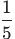
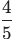
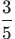
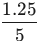
Let be a real matrix whose largest singular value is 
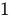
. Let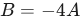
. Which of the following is true- The largest singular value of
 is
is  .
. - The smallest singular value of is .
- The largest singular value of is
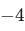
. - We don't have enough information to find the largest singular value of .
Comprehension passage - the questions below it refer to this
Suppose the completion time (in minutes) of a coding assignment during a machine learning interview follows a continuous uniform distribution 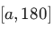
. Based on the above data, answer the given subquestions.If the expected completion time is 150 minutes, find the value of  .
.
.What is the conditional probability that the assignment takes more than
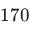
minutes given that it has already taken more than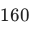
minutes
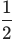
Let and
and 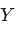
be two random variables having joint density function: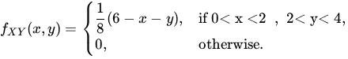
Find the value of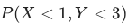
. Enter the answer correct to three decimal places.Let be a discrete random variable such that  is an unknown constant. Consider a random sample for the given sample. Enter the answer correct to one decimal place.
is an unknown constant. Consider a random sample for the given sample. Enter the answer correct to one decimal place.
be a discrete random variable such that 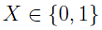
and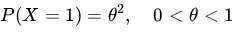
where is an unknown constant. Consider a random sample 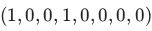
. Find the maximum likelihood estimate of for the given sample. Enter the answer correct to one decimal place.Let
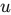
and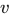
be orthogonal vectors in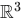
such that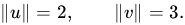
Define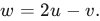
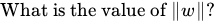
Find the point on the plane
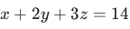
that is closest to the origin.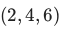

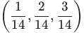
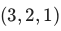
Find the best linear approximation of the function
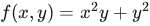
around the point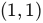
.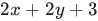
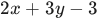
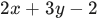
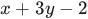
Which of the following options is/are correct
- Set of all global minima of a convex function forms a convex set.
- Gradient descent algorithm is useful in constrained optimization problem.
- Union of two convex sets will result in a convex set always.
- A function cannot be a convex function if its domain is not a convex set.
Comprehension passage - the questions below it refer to this
A logistics company transports goods using two types of vehicles: trucks (  ) and vans (
) and vans ( 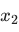
). Each truck consumes 6 litres of fuel and requires 4 hours of driver time per trip. Each van consumes 3 litres of fuel and requires 5 hours of driver time per trip. The company must complete at least 120 litres worth of fuel usage and at least 200 driver hours per week. The cost per truck trip is Rs. 80 and per van trip is Rs. 50. Note: The company wants to fulfill these requirements at the lowest possible cost. Based on the above data, answer the given subquestions.Which of the following correctly represents the objective function and constraints for the given problem
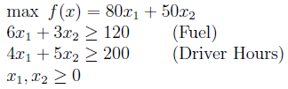
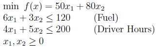
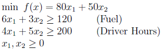
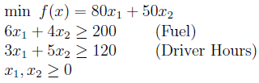
Which of the following is the correct Lagrangian function for the given problem
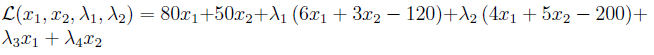
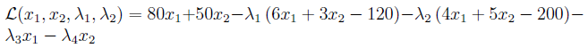
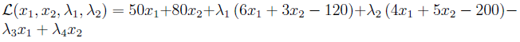
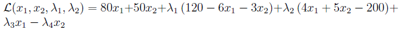
Which of the following correctly represents the complementary slackness conditions of the KKT conditions
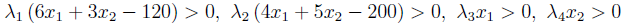
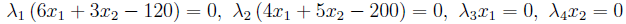
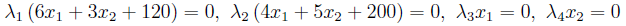
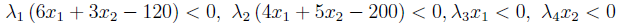
Let the composition of two functions
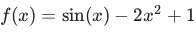
and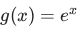
be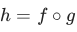
. Select all statements that are true in a small neighborhood around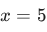
.- is a convex function.
- is a concave function.
- is a non-decreasing function.
- is a decreasing function.
Consider the following two matrices
 Which of the following options is/are correct
Which of the following options is/are correct
Which of the following options is/are correct - is not positive definite.
 is positive definite.
is positive definite. is positive definite.
is positive definite. is not positive definite.
is not positive definite.
Consider the following dataset with two features and three observations:
Let be the least squares solution that minimizes
Select the correct option(s):
- The minimum value of the loss function is zero.
- The minimum value of the loss function is strictly positive.
Answer key
- Q1 (MCQ, 2 marks): B
- Q2 (MCQ, 2 marks): A
- Q3 (SA, 2 marks): 120
- Q4 (MCQ, 3 marks): D
- Q5 (SA, 3 marks): 0.373 to 0.377
- Q6 (SA, 3 marks): 0.49 to 0.51
- Q7 (SA, 3 marks): 5
- Q8 (MCQ, 3 marks): B
- Q9 (MCQ, 3 marks): B
- Q10 (MSQ, 2 marks): A, D
- Q11 (MCQ, 2 marks): C
- Q12 (MCQ, 1 marks): B
- Q13 (MCQ, 1 marks): B
- Q14 (MSQ, 3 marks): B, D
- Q15 (MSQ, 3 marks): B, C
- Q16 (MSQ, 4 marks): A, D